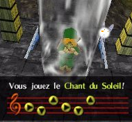
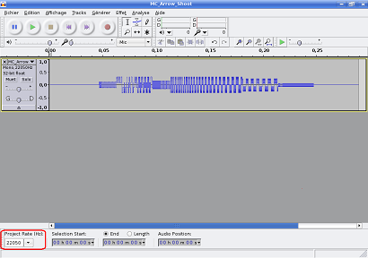

Bonjour. Il y a une raison pour laquelle vous êtes ici :
vous connaissez SDL_Mixer et vous voulez apprendre à vous en servir ;
vous ne le connaissez pas, mais vous êtes curieux (ou non).
SDL_Mixer est une bibliothèque permettant de jouer du son avec une application graphique. Vous êtes sûrement ici parce que vous ne voulez pas utiliser FMOD, qui est expliqué dans le tutoriel de M@teo, parce qu'il n'est pas libre : SDL_Mixer l'est. Ou peut-être pour une autre raison.
Pourquoi n'êtes-vous pas allés dans la doc ?
Peut-être parce qu'elle vous fait peur (c'est vrai qu'au début... :p ).
Peut-être parce que vous ne lisez pas l'anglais (ça, je peux comprendre).
Peut-être parce que vous êtes lâches (ha... c'est vrai, vous êtes des programmeurs :-° ).
Bon, vous êtes décidés ? Installons SDL_Mixer. :D Mais avant...
Pourquoi installer SDL_Mixer ?
SDL_Mixer sert à jouer du son dans une application graphique. Dans son tutoriel, M@teo montre comment utiliser FMOD. Cependant, FMOD n'est pas libre et vous devez donc payer l'auteur si vous créez un logiciel commercial. SDL_Mixer est assez simple d'utilisation, donc si vous avez compris la SDL, vous n'aurez aucune difficulté à comprendre SDL_Mixer.
Est-ce qu'il faut absolument l'utiliser avec la bibliothèque SDL ?
Non.
Installer SDL_Mixer
Sous Windows
Pour commencer, il faudra le télécharger. Allez sur le site de SDL_Mixer. Sous « Binary : », cliquez sur : « SDL_mixer-devel-1.2.8-VC8.zip » même si vous n'êtes pas sous Visual C++. Vous y trouverez :
SDL_mixer.h (SDL_mixer-1.2.8\include) : placez-le au même endroit que vos autres .h de la bibliothèque SDL (sous Code::Blocks: C:\Program Files\CodeBlocks\MinGW\include\SDL) ;
SDL_mixer.lib : placez SDL_mixer.lib (qui se trouve dans SDL_mixer-1.2.8\lib) dans C:\Program Files\CodeBlocks\MinGW\lib si vous êtes sous Code::Blocks, sinon dans le dossier où se trouvent vos .lib ou .a ;
et plusieurs .dll : placez toutes les .dll (qui se trouvent dans SDL_mixer-1.2.8\lib) dans tous vos projets.
Il ne reste plus qu'à modifier les options de votre projet pour pouvoir le linker. Sous Code::Blocks, project -> Build options, Linker settings, puis cliquez sur add et allez chercher votre SDL_mixer.lib. Voilà, votre projet est prêt.
Sous Linux
Installez, comme tout autre programme, les paquets suivants :
libsdl-mixer1.2 ;
libsdl-mixer1.2-dev.
Pour vos projets, vous devrez lier SDL_Mixer à vos projets comme ceci :
-lSDL_mixer
Votre projet
Maintenant que vous avez installé SDL_Mixer, vous devez l'inclure à tous vos projets :
#include <SDL/SDL_mixer.h>
Êtes-vous prêts ? Car c'est maintenant que ça commence !
Voilà le code de base d'un programme SDL ; c'est à partir de cela que nous allons travailler :
Maintenant que SDL_Mixer est installé, on va pouvoir commencer à apprendre son fonctionnement et ainsi l'utiliser. Si ce n'est pas super ! Vos jeux vont enfin avoir du son ! Voici les formats supportés par SDL_Mixer :
.wav
.aiff
.voc
.mod .xm .s3m .669 .it .med et autres formats MOD
.mid
.ogg
.mp3
Il y a donc plein de formats.
Initialisation et fermeture de SDL_Mixer
Comme la SDL, SDL_Mixer doit être initialisé et fermé. Contrairement à ce que l'on pourrait penser, on n'est pas obligé d'ajouter SDL_INIT_AUDIO à SDL_Init() . Si on avait voulu jouer de la musique sans SDL_Mixer, il aurait fallu l'ajouter.
Pourquoi nous apprends-tu SDL_Mixer si on peut jouer de la musique sans ?
Avec seulement la SDL, nous pouvons gérer beaucoup moins de formats ; c'est pourquoi je vous montre SDL_Mixer. Bon, finies les questions, commençons ! Voici le prototype de la fonction qui permet d'initialiser l'API mixer :
int Mix_OpenAudio(int frequency, Uint16 format, int channels, int chunksize);
Le premier paramètre est la fréquence, c'est la qualité du son que SDL_Mixer doit jouer. Si vous avez de la musique à jouer, il faudra sûrement mettre : 44100, qui équivaut à 44.1 KHz, soit la qualité d'un CD audio. Il y a un define MIX_DEFAULT_FREQUENCY , valant 22050, qui est la fréquence par défaut utilisée dans la plupart des jeux vidéo, car la fréquence 44100 utilise trop de puissance du processeur sur les anciens ordinateurs. Je vous conseille d'utiliser 44100, sinon la qualité n'est pas acceptable. Toutefois, cela dépend des cas : j'ai un son qui n'est pas beau si la fréquence est loin de 16000.
Et si je veux jouer un son qui a une fréquence de 16000 Hz et une musique de 44.1 KHz en même temps, comment fais-je ?
Bonne question. Il faut réenregistrer le son qui a une fréquence de 16 KHz en un autre qui a une fréquence de 44.1 KHz ; c'est possible avec Audacity et je vais vous montrer comment faire dans le dernier chapitre.
Ensuite, le deuxième paramètre demande le format audio. Je ne vais pas entrer dans les détails et je vous demande de mettre le define MIX_DEFAULT_FORMAT .
Puis vient channels, signifiant canaux en anglais. Que sont ces canaux ? Dans SDL_Mixer, vous enregistrez des sons de votre ordinateur dans des canaux et pour pouvoir en écouter plusieurs en même temps, vous mélangez les canaux. Ça ne marche qu'avec les sons, pas avec les musiques. Je ne crois pas que vous aviez l'intention de mélanger deux musiques dans votre jeu. :) Mettez MIX_DEFAULT_CHANNELS qui est un define (vaut 2) qui signifie stéréo, 1 signifie mono, mais utilisez MIX_DEFAULT_CHANNELS pour une plus belle musique.
Finalement, il y a chunksize. Qu'est-ce que ça signifie ? C'est le nombre de bits pour les sons, utilisez 1024 et ça suffira ; je n'ai pas remarqué de différence en changeant la valeur. La fonction renvoie 0 si cela a fonctionné et -1 s'il y a une erreur.
Y a-t-il une façon de savoir quelles sont les erreurs ?
Oui, l'erreur est dans Mix_GetError(); . Il faut donc faire ceci pour initialiser SDL_Mixer et connaître les erreurs :
Ce code est le code de base pour jouer du son ou de la musique ; cela s'appliquera donc à la partie suivante « Jouer un son court ».
Jouer la musique
Chargement et libération de la musique
Pour commencer, on doit créer un pointeur de type Mix_Music. Créons-le :
Mix_Music *musique;
Pour libérer une musique, on utilise la fonction Mix_FreeMusic(); , avec comme paramètre... le pointeur !
Mix_FreeMusic(musique);
(La libération est toujours à la fin.)
Jouer la musique
Maintenant, on doit charger une musique dans ce pointeur à l'aide de Mix_LoadMUS :
musique = Mix_LoadMUS("musique.mp3");
On peut enfin jouer la musique ! Hein, c'était facile ? Voici le prototype de la fonction qui permet de jouer cette musique :
int Mix_PlayMusic(Mix_Music *music, int loops)
Le premier paramètre est le pointeur que vous venez de créer, en l'occurrence « » , et le second est le nombre de fois que la musique doit être jouée. Pour la jouer à l'infini, mettez -1 en paramètre.
Voici un code pour jouer une musique :
#include <SDL/SDL.h>
#include <SDL/SDL_mixer.h>
#include <stdio.h>
#include <stdlib.h>
int main(int argc, char *argv[])
{
int continuer = 1;
SDL_Init(SDL_INIT_VIDEO);
SDL_Surface *ecran = NULL;
ecran = SDL_SetVideoMode(640, 480, 32, SDL_HWSURFACE | SDL_DOUBLEBUF);
SDL_Event event;
SDL_WM_SetCaption("SDL_Mixer", NULL);
SDL_Flip(ecran);
if(Mix_OpenAudio(44100, MIX_DEFAULT_FORMAT, MIX_DEFAULT_CHANNELS, 1024) == -1) //Initialisation de l'API Mixer
{
printf("%s", Mix_GetError());
}
Mix_Music *musique; //Création du pointeur de type Mix_Music
musique = Mix_LoadMUS("musique.mp3"); //Chargement de la musique
Mix_PlayMusic(musique, -1); //Jouer infiniment la musique
while(continuer)
{
SDL_WaitEvent(&event);
switch(event.type)
{
case SDL_QUIT:
continuer = 0;
break;
}
}
Mix_FreeMusic(musique); //Libération de la musique
Mix_CloseAudio(); //Fermeture de l'API
SDL_Quit();
return EXIT_SUCCESS;
}
Voilà, vous pouvez jouer de la musique ! Mais, ce n'est pas tout. N'avez-vous pas pensé que ce serait encore mieux si on pouvait mettre en pause la musique, reprendre la musique, la remettre au début ou encore modifier le volume ?
Autres actions sur la musique
Pour arrêter la musique, utilisez la fonction Mix_PauseMusic(); . Et pour la reprendre au même endroit, Mix_ResumeMusic(); . Pour revenir au début, Mix_RewindMusic(); (ne marche pas avec les .mid, car c'est un format un peu à part). Pour régler le volume : Mix_VolumeMusic(); . Pour lui, il y a un paramètre : le volume ! Il va de 0 à 128 (ou MIX_MAX_VOLUME , un define qui est le son maximum). On peut donc mettre le volume à moitié :
Mix_VolumeMusic(MIX_MAX_VOLUME / 2);
Pour arrêter la musique, utilisez la fonction Mix_HaltMusic(); .
Pour savoir si la musique est en pause, on vérifie si Mix_PausedMusic() est égal à 1. Pour savoir si la musique est en train de jouer, on vérifie si Mix_PlayingMusic() est égal à 1.
Voici un code qui mélange toutes ces fonctions :
#include <SDL/SDL.h>
#include <SDL/SDL_mixer.h>
#include <stdio.h>
#include <stdlib.h>
int main(int argc, char *argv[])
{
int continuer = 1;
SDL_Init(SDL_INIT_VIDEO);
SDL_Surface *ecran = NULL;
ecran = SDL_SetVideoMode(640, 480, 32, SDL_HWSURFACE | SDL_DOUBLEBUF);
SDL_Event event;
SDL_WM_SetCaption("SDL_Mixer", NULL);
SDL_Flip(ecran);
if(Mix_OpenAudio(44100, MIX_DEFAULT_FORMAT, MIX_DEFAULT_CHANNELS, 1024) == -1) //Initialisation de l'API Mixer
{
printf("%s", Mix_GetError());
}
Mix_VolumeMusic(MIX_MAX_VOLUME / 2); //Mettre le volume à la moitié
Mix_Music *musique; //Création d'un pointeur de type Mix_Music
musique = Mix_LoadMUS("musique.mp3"); //Chargement de la musique
Mix_PlayMusic(musique, -1); //Jouer infiniment la musique
while(continuer)
{
SDL_WaitEvent(&event);
switch(event.type)
{
case SDL_QUIT:
continuer = 0;
break;
case SDL_KEYDOWN:
switch (event.key.keysym.sym)
{
case SDLK_p:
if(Mix_PausedMusic() == 1)//Si la musique est en pause
{
Mix_ResumeMusic(); //Reprendre la musique
}
else
{
Mix_PauseMusic(); //Mettre en pause la musique
}
break;
case SDLK_BACKSPACE:
Mix_RewindMusic(); //Revient au début de la musique
break;
case SDLK_ESCAPE:
Mix_HaltMusic(); //Arrête la musique
break;
}
break;
}
}
Mix_FreeMusic(musique); //Libération de la musique
Mix_CloseAudio(); //Fermeture de l'API
SDL_Quit();
return EXIT_SUCCESS;
}
Pourquoi quand j'essaie de jouer un midi, il n'y a aucun son ?
SDL_Mixer utilise Timidity pour jouer les midis, donc c'est normal qu'il n'y ait aucun son s'il n'est pas installé sous Linux. (Je n'ai eu aucun problème sous Windows, alors si vous en rencontrez un, envoyez-moi un message privé, merci.)
Une dernière petite chose à savoir : si vous faites deux fois appel à la fonction Mix_PlayMusic(); , le deuxième appel remplacera le premier au moment de son appel, tout simplement. Voilà, vous savez beaucoup de choses sur la manière de jouer de la musique. Nous attaquerons, dans la prochaine partie, les sons. C'est là que viendront les fameux canaux.
Dans cette partie, nous allons vous allez apprendre à jouer des sons. On verra que c'est différent avec les canaux.
Les canaux
Je n'ai toujours pas compris à quoi servent les canaux, peux-tu m'expliquer plus clairement ce que c'est ?
Oui. Avec SDL_Mixer, on ne peut pas jouer un son comme ça ; il faut le mettre dans un canal. On ne peut jouer qu'un seul son par canal. C'est un peu comme une radio, il y a plusieurs canaux, et dans chaque canal, il y a de la musique (ou autre) différente. Dans SDL_Mixer, c'est mieux : on peut mixer les canaux (SDL_mixer) pour pouvoir en jouer plusieurs en même temps.
On se sert de la fonction Mix_AllocateChannels(); pour allouer des canaux, avec comme paramètre le nombre de canaux. Si vous souhaitez jouer un maximum de 10 sons en même temps, mettez dix canaux :
Mix_AllocateChannels(10);
Pour régler le son d'un canal, utilisez la fonction Mix_Volume(); , qui prend 2 paramètres : le canal et le son. Cela peut donner par exemple :
Mix_Volume(1, MIX_MAX_VOLUME/2);
Mettre le canal 1 à mi-volume. Ceci est facultatif.
Charger et jouer le son
Ensuite, tout comme pour la musique, il faut créer un pointeur pour contenir un son. Cette fois-ci, c'est un pointeur de type Mix_Chunk :
Mix_Chunk *son;
Puis, il faut charger le son à l'aide de Mix_LoadWAV() :
son = Mix_LoadWAV("son.wav");
Mix_LoadWAV
peut charger des sons de types WAVE, AIFF, RIFF, OGG et VOC.
On peut ensuite mettre un volume pour ce son (au lieu d'un canal comme plus haut) : Mix_VolumeChunk(son, MIX_MAX_VOLUME/2); Rien de nouveau : le pointeur et le volume.
On peut finalement jouer le son ! À l'aide de la fonction Mix_PlayChannel(); :
Mix_PlayChannel(1, son, 0);
Le premier paramètre est le canal sur lequel on le joue ; on peut mettre -1 pour le premier canal libre. Le deuxième est le pointeur. Et le dernier est le nombre de fois qu'on le joue plus 1 ; donc si on met 0, ça le joue une fois, si on met 10, ça le joue 11 fois (on peut le jouer plusieurs fois si le son a une fréquence de 22.05 KHz ou moins, avec 44.1 KHz, on peut le jouer qu'une seule fois).
Il faut bien sûr libérer le son avec Mix_FreeChunk(); :
Mix_FreeChunk(son);
Voici un code complexe complet :
#include <SDL/SDL.h>
#include <SDL/SDL_mixer.h>
#include <stdio.h>
#include <stdlib.h>
int main(int argc, char *argv[])
{
int continuer = 1;
SDL_Init(SDL_INIT_VIDEO);
SDL_Surface *ecran = NULL;
ecran = SDL_SetVideoMode(640, 480, 32, SDL_HWSURFACE | SDL_DOUBLEBUF);
SDL_Event event;
SDL_WM_SetCaption("SDL_Mixer", NULL);
SDL_Flip(ecran);
if(Mix_OpenAudio(44100, MIX_DEFAULT_FORMAT, MIX_DEFAULT_CHANNELS, 1024) == -1) //Initialisation de l'API Mixer
{
printf("%s", Mix_GetError());
}
Mix_AllocateChannels(32); //Allouer 32 canaux
Mix_Volume(1, MIX_MAX_VOLUME/2); //Mettre à mi-volume le post 1
Mix_Chunk *son;//Créer un pointeur pour stocker un .WAV
Mix_Chunk *son2;
son = Mix_LoadWAV("son.wav"); //Charger un wav dans un pointeur
son2 = Mix_LoadWAV("son2.wav");
Mix_VolumeChunk(son, MIX_MAX_VOLUME/2); //Mettre un volume pour ce wav
Mix_VolumeChunk(son2, MIX_MAX_VOLUME);
while(continuer)
{
SDL_WaitEvent(&event);
switch(event.type)
{
case SDL_QUIT:
continuer = 0;
break;
case SDL_KEYDOWN:
switch (event.key.keysym.sym)
{
case SDLK_a:
Mix_PlayChannel(1, son, 0);//Joue le son 1 sur le canal 1 ; le joue une fois (0 + 1)
break;
case SDLK_s:
Mix_PlayChannel(2, son2, 2);//Joue le son 2 sur le canal 2 ; le joue 3 fois (2 + 1)
break;
}
break;
}
}
Mix_FreeChunk(son);//Libération du son 1
Mix_FreeChunk(son2);
Mix_CloseAudio(); //Fermeture de l'API
SDL_Quit();
return EXIT_SUCCESS;
}
Il est possible de mettre en pause un son, de le reprendre et de l'arrêter. En fait, c'est plutôt sur le canal qu'on va faire ces actions.
Quel est l'intérêt de mettre un son en pause ?
S'il y a un menu dans votre jeu, que le joueur donne un coup d'épée qui déclenche un son (par exemple) et qu'il appuie sur le bouton pour faire apparaître le menu, le personnage cesse de bouger et le son peut s'arrêter, au lieu « d'empiéter » sur le menu.
Pour arrêter un canal, utilisez la fonction Mix_HaltChannel(); avec, entre parenthèses, le canal à arrêter. Si vous voulez arrêter tous les canaux, mettez -1 en paramètre :
Mix_HaltChannel(-1);
Pour mettre en pause un canal, utilisez la fonction Mix_Pause(); avec comme paramètre le canal à mettre en pause. Là encore, vous pouvez mettre -1 pour mettre tous les canaux en pause.
Maintenant, il faut reprendre ce son arrêté : la fonction est Mix_Resume(); et le canal à reprendre en paramètre (-1 reprend tous les canaux).
Pour savoir si un canal est en pause : Mix_Paused() (en paramètre le canal) : s'il vaut 1, il est en pause, s'il vaut 0, il n'est pas en pause. Vous pouvez mettre -1 pour savoir combien de canaux sont en pause.
Il y a aussi la fonction Mix_Playing() : si elle vaut 1, le canal en paramètre joue. Si on met -1 en paramètre, cela indique le nombre de canaux qui jouent. Il vaut 0 si le canal ne joue pas.
Alors, voilà un code qui rassemble toutes les fonctions :
#include <SDL/SDL.h>
#include <SDL/SDL_mixer.h>
#include <stdio.h>
#include <stdlib.h>
int main(int argc, char *argv[])
{
int continuer = 1;
SDL_Init(SDL_INIT_VIDEO);
SDL_Surface *ecran = NULL;
ecran = SDL_SetVideoMode(640, 480, 32, SDL_HWSURFACE | SDL_DOUBLEBUF);
SDL_Event event;
SDL_WM_SetCaption("SDL_Mixer", NULL);
SDL_Flip(ecran);
if(Mix_OpenAudio(44100, MIX_DEFAULT_FORMAT, MIX_DEFAULT_CHANNELS, 1024) == -1) //Initialisation de l'API Mixer
{
printf("%s", Mix_GetError());
}
Mix_AllocateChannels(32); //Allouer 32 canaux
Mix_Volume(1, MIX_MAX_VOLUME/2); //Mettre à mi-volume le post 1
Mix_Chunk *son;//Créer un pointeur pour stocker un .WAV
Mix_Chunk *son2;
son = Mix_LoadWAV("son1.wav"); //Charger un wav dans un pointeur
son2 = Mix_LoadWAV("son2.wav");
Mix_VolumeChunk(son, MIX_MAX_VOLUME/2); //Mettre un volume pour ce wav
Mix_VolumeChunk(son2, MIX_MAX_VOLUME);
while(continuer)
{
SDL_WaitEvent(&event);
switch(event.type)
{
case SDL_QUIT:
continuer = 0;
break;
case SDL_KEYDOWN:
switch (event.key.keysym.sym)
{
case SDLK_a:
Mix_PlayChannel(1, son, 0);//Joue le son 1 sur le canal 1 ; le joue une fois (0 + 1)
break;
case SDLK_s:
Mix_PlayChannel(2, son2, 2);//Joue le son 2 sur le canal 2 ; le joue 3 fois (2 + 1)
break;
case SDLK_ESCAPE:
Mix_HaltChannel(-1); //On arrête tous les canaux
break;
case SDLK_PAUSE:
if(Mix_Paused(2) == 1) //Si le canal 2 est en pause
{
Mix_Resume(2); //Le canal 2 peut maintenant rejouer
}
else
{
Mix_Pause(2); //On met en pause le canal 2
}
break;
}
break;
}
}
Mix_FreeChunk(son);//Libération du son 1
Mix_FreeChunk(son2);
Mix_CloseAudio(); //Fermeture de l'API
SDL_Quit();
return EXIT_SUCCESS;
}
Cela peut paraître évident pour certains, mais je le précise quand même : vous pouvez jouer une musique et des sons en même temps. La musique n'est pas dans un canal, alors que le son oui. Voilà, vous savez comment jouer un son et une musique. Je vous avais dit que ce serait un jeu d'enfant si vous n'aviez aucun problème avec la SDL. Nous verrons dans la prochaine partie un résumé de tout ce que l'on a vu ensemble.
Un ocarina est un petit instrument de musique à vent :
Et comment va-t-on faire ça ?
Comme dans Zelda, c'est-à-dire comme ceci :

Vous voyez, il y a la portée et les notes qui s'afficheront lorsque l'on cliquera sur l'une des touches suivantes :
z ;
flèche gauche ;
flèche droite ;
flèche bas ;
flèche haut.
Préparation
Le principe est simple : l'utilisateur joue une suite de notes ; ensuite, la musique se joue.
Il y a un maximum de huit notes, donc quand l'utilisateur a joué huit notes et que ce n'est pas une musique, on les efface toutes. On va faire une touche (backspace) qui permettra d'effacer toutes les notes à la place d'en jouer huit (c'est plus pratique si on se trompe). On activera le « mode Ocarina » lors de l'appui de la touche « o ». Donc, on ne peut pas jouer s'il n'est pas activé. Un autre appui sur la touche « o » le désactivera. Il se désactivera aussi à la fin d'une musique.
Voici ce que ça donne sous forme de gif animé si ce n'est pas assez clair pour ceux qui n'ont jamais joué à Zelda : Ocarina of Time :
Dans cette image, les notes ne sont, bien sûr, pas jouer (ce n'est pas une vidéo). Remarquez bien que les notes suivent la musique (dans votre programme, pas dans l'image).
Encore quelques détails et je vous laisse coderpenser. Eh oui, il faut penser avant de coder. Ce TP n'est pas très difficile si vous avez bien suivi les cours de M@teo (oui, je l'ai fait, alors pourquoi pas vous ? ;) ).
Vous devrez inclure les fichiers .h suivants :
SDL.h
SDL_mixer.h
SDL_image.h (au choix).
Je vous conseille de faire un tableau qui contiendra les 8 notes de la portée. De plus, utilisez une énumération avec comme valeurs possibles NONE, Z, BAS, HAUT, GAUCHE et DROITE. Chaque case du tableau devra contenir une valeur possible de l'énumération.
Vous pouvez faire autrement, mais n'oubliez pas la valeur possible qui ne vaut aucune note, car il y a des musiques de 6 notes au lieu de 8. Vous aurez besoin de ressources graphiques et sonores que vous pouvez télécharger ici.
Voici un tableau qui montre les images et donne leur position. Si vous voulez les mêmes positions que moi, utilisez une fenêtre de 640 * 480. (i est égal à la note qu'on est tenu de jouer)
Image
Position (x, y)
(115 + i * 53, 400)
(115 + i * 53, 345)
(115 + i * 53, 355)
(115 + i * 53, 380)
(115 + i * 53, 390)
(75, 350)
Ensuite, vous aurez besoin de connaître les notes qu'il faut jouer pour faire jouer la musique. G = Gauche, H = Haut, D = Droite, B = Bas, N = aucune note Berceuse de Zelda : GHDGHDNN Chanson d'Epona : HGDHGDNN Chant de Saria : BDGBDGNN Ces trois musiques sont incluses dans le fichier .zip que je vous ai fait télécharger.
Correction
Bon, avez-vous fini ? Non... :euh: Qu'est-ce que vous faites là ? :colere2: Si c'est le cas, je vous demande de relire cette page ou, si vous ne réussissez toujours pas, de demander de l'aide sur le forum, car vous devriez être capables de le faire puisqu'il n'est pas d'une extrême difficulté.
Je vous rappelle que c'est mon code, donc le vôtre est sûrement différent parce que chacun code à sa façon.
/*
Projet Ocarina
créé par Antoyo
pour le Site du Zér0
*/
#include <stdio.h>
#include <stdlib.h>
#include <SDL/SDL.h>
#include <SDL/SDL_mixer.h>
#include <SDL/SDL_image.h>
//Cette structure sera transmise à la fonction qui sert de boucle du programme
typedef struct Donnees Donnees;
struct Donnees
{
int continuer;
int sonNumero;
int ocarina;
int musique[8];
SDL_Surface *ecran;
Mix_Chunk *gauche, *haut, *droite, *bas, *z;
Mix_Music *BerceuseZelda, *ChantEpona, *ChantSaria;
SDL_Rect positionBarre, positionNote[8], positionOcarina;
SDL_Event event;
};
int bouclePrincipale(Donnees *p);
int verifieMusique(int *musique);
enum {NONE, Z, BAS, HAUT, GAUCHE, DROITE};
enum {AUCUNE, BERCEUSE, EPONA, SARIA};
int main(int argc, char *argv[])
{
Donnees p = {0, 0, 0, 0, 0, 0, 0, 0, 0};
//la variable sonNumero sert à savoir quelle note, de 0 à 7, on est tenu de jouer (pour le tableau de notes) ; la variable ocarina est un booléen qui vaut 1 lorsque la barre est affichée et que l'on peut jouer. Le tableau musique sert à retenir les notes jouées.
p.continuer = 1, p.sonNumero = 0, p.ocarina = 0;
p.musique[8];
SDL_Init(SDL_INIT_VIDEO | SDL_INIT_TIMER);
p.ecran = SDL_SetVideoMode(640, 480, 32, SDL_HWSURFACE | SDL_DOUBLEBUF);
SDL_WM_SetCaption("Ocarina", NULL);
SDL_WM_SetIcon(IMG_Load("ocarina.png"), NULL);
if(Mix_OpenAudio(44100, MIX_DEFAULT_FORMAT, MIX_DEFAULT_CHANNELS, 1024) == -1) //Ouverture de SDL_Mixer
{
printf("%s", Mix_GetError());
}
Mix_AllocateChannels(1); //Je n'alloue qu'un seul canal, car on ne peut jouer qu'une seule note à la fois.
//Chargement des sons.
p.gauche = Mix_LoadWAV("OOT_Notes_Ocarina_A_long.wav");
p.droite = Mix_LoadWAV("OOT_Notes_Ocarina_B_long.wav");
p.haut = Mix_LoadWAV("OOT_Notes_Ocarina_D2_long.wav");
p.bas = Mix_LoadWAV("OOT_Notes_Ocarina_D_long.wav");
p.z = Mix_LoadWAV("OOT_Notes_Ocarina_F_long.wav");
//Chargement des musiques.
p.BerceuseZelda = Mix_LoadMUS("z5_BerceuseZelda.mp3");
p.ChantEpona = Mix_LoadMUS("z5_ChantEpona.mp3");
p.ChantSaria = Mix_LoadMUS("z5_ChantSaria.mp3");
p.positionBarre.x = 75;
p.positionBarre.y = 350;
p.positionOcarina.x = 0;
p.positionOcarina.y = 0;
while(p.continuer)
{
bouclePrincipale(&p);
}
//On libère la mémoire et on ferme ce qu'on a ouvert.
Mix_FreeChunk(p.bas);
Mix_FreeChunk(p.haut);
Mix_FreeChunk(p.droite);
Mix_FreeChunk(p.gauche);
Mix_FreeChunk(p.z);
Mix_FreeMusic(p.BerceuseZelda);
Mix_FreeMusic(p.ChantEpona);
Mix_FreeMusic(p.ChantSaria);
Mix_CloseAudio();
SDL_Quit();
return EXIT_SUCCESS;
}
int verifieMusique(int *musique)
{
if(musique[0] == GAUCHE && musique[1] == HAUT && musique[2] == DROITE && musique[3] == GAUCHE && musique[4] == HAUT && musique[5] == DROITE && musique[6] == NONE && musique[7] == NONE)
{
return BERCEUSE;
}
if(musique[0] == HAUT && musique[1] == GAUCHE && musique[2] == DROITE && musique[3] == HAUT && musique[4] == GAUCHE && musique[5] == DROITE && musique[6] == NONE && musique[7] == NONE)
{
return EPONA;
}
if(musique[0] == BAS && musique[1] == DROITE && musique[2] == GAUCHE && musique[3] == BAS && musique[4] == DROITE && musique[5] == GAUCHE && musique[6] == NONE && musique[7] == NONE)
{
return SARIA;
}
return AUCUNE;
}
int bouclePrincipale(Donnees *p)
{
int i;
SDL_WaitEvent(&p->event);
switch(p->event.type)
{
case SDL_QUIT:
p->continuer = 0;
break;
case SDL_KEYDOWN:
switch(p->event.key.keysym.sym)
{
case SDLK_o:
if(p->ocarina)//Si la touche 'o' est pressée et si l'ocarina est activé, on le désactive, sinon on l'active.
{
p->ocarina = 0;
}
else
{
p->ocarina = 1;
}
p->sonNumero = 0; //La variable sonNumero vaut maintenant 0, car il n'y a plus de son en mémoire.
for(i = 0 ; i < 8 ; i ++) //Enlever les sons en mémoire.
{
p->musique[i] = NONE;
}
break;
case SDLK_z:
if(p->ocarina) //Si l'ocarina est activé (IMPORTANT)
{
Mix_PlayChannel(0, p->z, 0); //Jouer le son 'z'.
p->musique[p->sonNumero] = Z; //Insertion de la note 'z' dans le tableau à la case sonNumero
p->sonNumero ++; //Incrémentation de la variable sonNumero, car on a joué une note.
}
break;
case SDLK_DOWN:
if(p->ocarina)
{
Mix_PlayChannel(0, p->bas, 0);
p->musique[p->sonNumero] = BAS;
p->sonNumero ++;
}
break;
case SDLK_UP:
if(p->ocarina)
{
Mix_PlayChannel(0, p->haut, 0);
p->musique[p->sonNumero] = HAUT;
p->sonNumero ++;
}
break;
case SDLK_LEFT:
if(p->ocarina)
{
Mix_PlayChannel(0, p->gauche, 0);
p->musique[p->sonNumero] = GAUCHE;
p->sonNumero ++;
}
break;
case SDLK_RIGHT:
if(p->ocarina)
{
Mix_PlayChannel(0, p->droite, 0);
p->musique[p->sonNumero] = DROITE;
p->sonNumero ++;
}
break;
case SDLK_BACKSPACE:
Mix_HaltChannel(0);
p->sonNumero = 0;
for(i = 0 ; i < 8 ; i ++)
{
p->musique[i] = NONE;
}
break;
}
break;
}
SDL_FillRect(p->ecran, NULL, SDL_MapRGB(p->ecran->format, 0, 0, 0));
if(p->ocarina == 1)
{
SDL_BlitSurface(IMG_Load("BarreOcarina.png"), NULL, p->ecran, &p->positionBarre); //Si l'ocarina est activé, on affiche la barre
}
//Cette boucle sert à afficher les 8 notes.
for(i = 0 ; i < 8 ; i++)
{
switch(p->musique[i])
{
case 1:
p->positionNote[i].x = 115 + (i * 53);
p->positionNote[i].y = 400;
SDL_BlitSurface(IMG_Load("BoutonZOcarina.png"), NULL, p->ecran, &p->positionNote[i]);
break;
case 2:
p->positionNote[i].x = 115 + (i * 53);
p->positionNote[i].y = 390;
SDL_BlitSurface(IMG_Load("BoutonBasOcarina.png"), NULL, p->ecran, &p->positionNote[i]);
break;
case 3:
p->positionNote[i].x = 115 + (i * 53);
p->positionNote[i].y = 345;
SDL_BlitSurface(IMG_Load("BoutonHautOcarina.png"), NULL, p->ecran, &p->positionNote[i]);
break;
case 4:
p->positionNote[i].x = 115 + (i * 53);
p->positionNote[i].y = 355;
SDL_BlitSurface(IMG_Load("BoutonGaucheOcarina.png"), NULL, p->ecran, &p->positionNote[i]);
break;
case 5:
p->positionNote[i].x = 115 + (i * 53);
p->positionNote[i].y = 380;
SDL_BlitSurface(IMG_Load("BoutonDroiteOcarina.png"), NULL, p->ecran, &p->positionNote[i]);
break;
}
}
SDL_Flip(p->ecran);
/*
Berceuse de Zelda: GHDGHDNN
Chanson d'Epona: HGDHGDNN
Chant de Saria: BDGBDGNN
*/
//Si le tableau contient les notes correctes, on joue la musique
if(verifieMusique(p->musique) == BERCEUSE)
{
SDL_Delay(2000);
SDL_FillRect(p->ecran, NULL, SDL_MapRGB(p->ecran->format, 0, 0, 0));
SDL_BlitSurface(IMG_Load("BarreOcarina.png"), NULL, p->ecran, &p->positionBarre);
SDL_Flip(p->ecran);
//on joue la musique et on affiche les notes en même temps qu'elles se jouent dans la musique.
Mix_PlayMusic(p->BerceuseZelda, 1);
SDL_BlitSurface(IMG_Load("BoutonGaucheOcarina.png"), NULL, p->ecran, &p->positionNote[0]);
SDL_Flip(p->ecran);
SDL_Delay(1250);
SDL_BlitSurface(IMG_Load("BoutonHautOcarina.png"), NULL, p->ecran, &p->positionNote[1]);
SDL_Flip(p->ecran);
SDL_Delay(450);
SDL_BlitSurface(IMG_Load("BoutonDroiteOcarina.png"), NULL, p->ecran, &p->positionNote[2]);
SDL_Flip(p->ecran);
SDL_Delay(1300);
SDL_BlitSurface(IMG_Load("BoutonGaucheOcarina.png"), NULL, p->ecran, &p->positionNote[3]);
SDL_Flip(p->ecran);
SDL_Delay(800);
SDL_BlitSurface(IMG_Load("BoutonHautOcarina.png"), NULL, p->ecran, &p->positionNote[4]);
SDL_Flip(p->ecran);
SDL_Delay(450);
SDL_BlitSurface(IMG_Load("BoutonDroiteOcarina.png"), NULL, p->ecran, &p->positionNote[5]);
SDL_Flip(p->ecran);
SDL_Delay(5000);
for(i = 0 ; i < 8 ; i ++)
{
p->musique[i] = NONE;
}
p->sonNumero = 0;
p->ocarina = 0; //on oublie pas de désactiver l'ocarina
}
if(verifieMusique(p->musique) == EPONA)
{
SDL_Delay(2000);
SDL_FillRect(p->ecran, NULL, SDL_MapRGB(p->ecran->format, 0, 0, 0));
SDL_BlitSurface(IMG_Load("BarreOcarina.png"), NULL, p->ecran, &p->positionBarre);
SDL_Flip(p->ecran);
Mix_PlayMusic(p->ChantEpona, 1);
SDL_BlitSurface(IMG_Load("BoutonHautOcarina.png"), NULL, p->ecran, &p->positionNote[0]);
SDL_Flip(p->ecran);
SDL_Delay(750);
SDL_BlitSurface(IMG_Load("BoutonGaucheOcarina.png"), NULL, p->ecran, &p->positionNote[1]);
SDL_Flip(p->ecran);
SDL_Delay(200);
SDL_BlitSurface(IMG_Load("BoutonDroiteOcarina.png"), NULL, p->ecran, &p->positionNote[2]);
SDL_Flip(p->ecran);
SDL_Delay(1000);
SDL_BlitSurface(IMG_Load("BoutonHautOcarina.png"), NULL, p->ecran, &p->positionNote[3]);
SDL_Flip(p->ecran);
SDL_Delay(650);
SDL_BlitSurface(IMG_Load("BoutonGaucheOcarina.png"), NULL, p->ecran, &p->positionNote[4]);
SDL_Flip(p->ecran);
SDL_Delay(200);
SDL_BlitSurface(IMG_Load("BoutonDroiteOcarina.png"), NULL, p->ecran, &p->positionNote[5]);
SDL_Flip(p->ecran);
SDL_Delay(4000);
for(i = 0 ; i < 8 ; i ++)
{
p->musique[i] = NONE;
}
p->sonNumero = 0;
p->ocarina = 0;
}
if(verifieMusique(p->musique) == SARIA)
{
SDL_Delay(2000);
SDL_FillRect(p->ecran, NULL, SDL_MapRGB(p->ecran->format, 0, 0, 0));
SDL_BlitSurface(IMG_Load("BarreOcarina.png"), NULL, p->ecran, &p->positionBarre);
SDL_Flip(p->ecran);
Mix_PlayMusic(p->ChantSaria, 1);
SDL_BlitSurface(IMG_Load("BoutonBasOcarina.png"), NULL, p->ecran, &p->positionNote[0]);
SDL_Flip(p->ecran);
SDL_Delay(500);
SDL_BlitSurface(IMG_Load("BoutonDroiteOcarina.png"), NULL, p->ecran, &p->positionNote[1]);
SDL_Flip(p->ecran);
SDL_Delay(200);
SDL_BlitSurface(IMG_Load("BoutonGaucheOcarina.png"), NULL, p->ecran, &p->positionNote[2]);
SDL_Flip(p->ecran);
SDL_Delay(500);
SDL_BlitSurface(IMG_Load("BoutonBasOcarina.png"), NULL, p->ecran, &p->positionNote[3]);
SDL_Flip(p->ecran);
SDL_Delay(300);
SDL_BlitSurface(IMG_Load("BoutonDroiteOcarina.png"), NULL, p->ecran, &p->positionNote[4]);
SDL_Flip(p->ecran);
SDL_Delay(200);
SDL_BlitSurface(IMG_Load("BoutonGaucheOcarina.png"), NULL, p->ecran, &p->positionNote[5]);
SDL_Flip(p->ecran);
SDL_Delay(4000);
for(i = 0 ; i < 8 ; i ++)
{
p->musique[i] = NONE;
}
p->sonNumero = 0;
p->ocarina = 0;
}
//S'il n'y a aucune musique de joué, on désactive l'ocarina
if(verifieMusique(p->musique) == AUCUNE && p->sonNumero == 8)
{
for(i = 0 ; i < 8 ; i ++)
{
p->musique[i] = NONE;
}
p->sonNumero = 0;
}
}
Comme promis au début... quoi ? moi, des promesses ?... :p dans le prochain et dernier chapitre (eh oui, c'était long, vous ne trouvez pas ? :lol: ), vous verrez comment changer facilement la fréquence d'un effet sonore.
Dans cette dernière partie, nous allons apprendre à changer la fréquence d'un effet sonore avec Audacity.
Qu'est-ce que c'est, Audacity ?
Audacity est un logiciel fantastique pour modifier des effets sonores. Moi, je ne vais que vous montrer comment changer la fréquence et rien d'autre. Quoi, je ne connais pas beaucoup ce logiciel... :-°
Installer Audacity
Sous Windows
Il se trouve ici : http://audacity.sourceforge.net/. Cliquez sur « Télécharger Audacity 1.2.6 », ou s'il y a une version plus récente, cliquez sur elle, mais évitez de prendre une version bêta. Sur la nouvelle page, cliquez sur « Windows ». Ensuite, cliquez sur « Audacity 1.2.6 installer », ou autre s'il y avait une version plus récente pour le télécharger. Voici comment l'installer. Double-cliquez sur l'icône « audacity-win-1.2.6 », cliquez sur « Next », cliquez sur « I accept the agreement », puis encore « Next ». Ensuite, cliquez encore sur « Next ». Choisissez l'endroit (ou laissez comme ça) puis cliquez sur « Next ». Choisissez les options que vous voulez puis cliquez sur « Next ». Finalement, cliquez sur « Install ». Cliquez sur « Finish » pour terminer l'installation.
Lorsque vous l'ouvrez pour la première fois, choisissez votre langue, puis cliquez sur « OK ».
Sous Linux
Téléchargez, installez le paquet audacity dans les dépôts ou sur le site de Audacity et cliquez sur « Télécharger Audacity 1.2.6 ». Ensuite, cliquez sur « Linux/Unix » et choisissez votre distribution.
Changer la fréquence d'un son
C'est super-simple. Ouvrez Audacity. Ensuite, cliquez sur « Fichier -> ouvrir » et choisissez votre son. En bas à gauche, vous pouvez voir la fréquence actuelle de votre effet sonore :  Vous n'avez qu'à mettre 44100 (en cliquant sur la flèche - il n'y a pas de flèche sous Windows, donc cliquez sur le bouton - puis en choisissant 44100 ou en l'écrivant au clavier) à la place de 22050 (dans cet exemple). Pour l'enregistrer, cliquez sur « Fichier -> export » (ou « Exporter en WAV... »), puis « Save ».
Voilà, c'est fini ! Je vous défie de changer la fréquence des effets sonores dans le fichier que je vous ai fait télécharger pour le T.P.
Voilà, vous savez pas mal de choses sur SDL_Mixer . Si vous voulez en apprendre plus, il y a bien d'autres choses, certes moins importantes, dans la doc'. C'est en regardant dans les documentations que vous apprendrez le plus. J'ai remarqué qu'il y avait des fonctions pour faire un son qui se rapproche ou qui s'éloigne, cela peut être intéressant aussi. Donc, allez dans la doc', vous trouverez votre bonheur. :D J'attends vos commentaires pour mon premier tutoriel.
{kind=link}